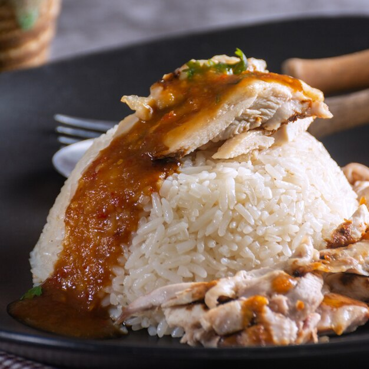

Hainanese Chicken Rice

Description
My favorite food of all time! Don't be fooled by the simple ingredients.
The secret is in the broth: this is the most amazing, flavorsome Chinese chicken rice dish you've ever tried.
Garnish with sliced cucumber, sprigs of spring onions, and cilantro.
Ingredients
-
For the Chicken:
-
1 whole chicken
-
1 stalk spring onion (Optional)
-
3 cloves garlic, crushed, or to taste
-
1 (1 inch) piece fresh ginger root (Optional)
-
water to cover
-
salt to taste
-
For the Soy Sauce:
-
5 tablespoons light soy sauce
-
1 ½ tablespoons white sugar, or to taste
-
1 tablespoon garlic oil (Optional)
-
1 teaspoon sesame oil
-
For the Rice:
-
3 cups uncooked rice, or more to taste
-
3 cloves garlic, minced, or to taste
-
1 (1 inch) piece ginger, crushed (Optional)
-
salt to taste
-
For the Garlic Chile Dip:
-
5 red chile peppers, seeded and chopped
-
2 limes, juiced
-
3 cloves garlic
-
1 (1/2 inch) piece ginger (Optional)
-
¼ teaspoon salt
-
1 pinch white sugar, or to taste
-
Ginger Dip:
-
2 limes, juiced
-
3 cloves garlic
-
1 (1 inch) piece young ginger (Optional)
-
⅛ teaspoon salt
Steps
-
Trim chicken of all excess fat, reserving fat.
-
Place chicken, spring onion, 3 cloves crushed garlic, and one 1-inch piece ginger in a large pot.
Pour in enough water to cover.
Bring to a boil; reduce heat to low and simmer, skimming any scum off the surface, until an instant-read thermometer inserted into the thickest part of the thigh, near the bone, reads 165 degrees F (74 degrees C), about 1 hour.
-
Remove chicken from the pot, reserving broth.
Rub chicken with salt.
Chop into pieces and arrange on a serving plate.
-
Combine soy sauce, 3 tablespoons reserved chicken broth, 1 1/2 tablespoon sugar, garlic oil, and sesame oil in a small bowl.
Drizzle over chicken pieces.
-
Melt reserved chicken fat in a large pot over medium heat.
Add rice, 3 cloves minced garlic, crushed 1-inch piece ginger, and salt; cook and stir until rice is glossy and fragrant, 2 to 3 minutes.
-
Pour enough reserved chicken broth into the pot to cover rice by half an inch.
Cover; bring to a boil. Cook until rice is tender and liquid is absorbed, 20 to 25 minutes.
Let rice sit, covered, for 5 minutes.
Fluff with a fork.
-
Combine red chile peppers, juice of 2 limes, 2 tablespoons reserved chicken broth, 3 cloves garlic, one 1/2-inch piece ginger, 1/4 teaspoon salt, and 1 pinch sugar in a blender; blend until garlic chile dip is smooth.
-
Combine juice of 2 limes, 2 tablespoons reserved chicken broth, 3 cloves garlic, one 1-inch piece ginger, and 1/8 teaspoon salt in a blender; blend until ginger dip is smooth.
-
Serve garlic chile and ginger dips alongside chicken and rice.
back to recipes